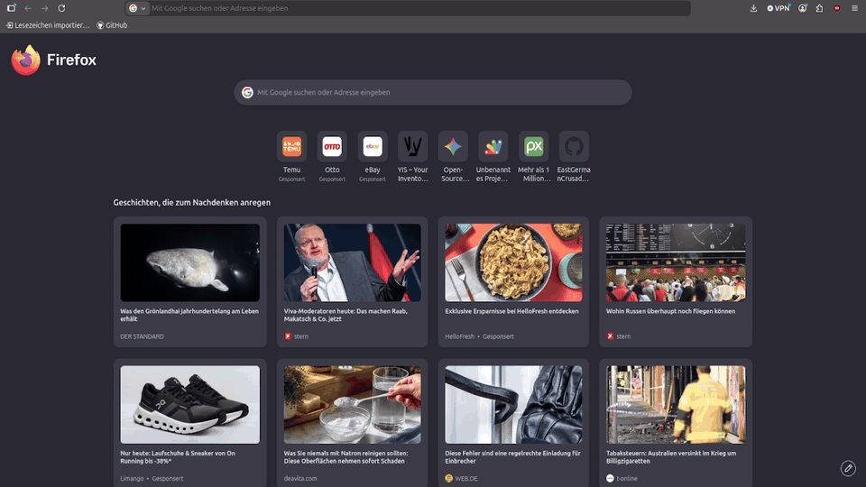

Akte per QR oder Link ?sn=SERIENNUMMER — ohne Anmeldung.
YIS
Your Inventory SystemDemo · English below
Open Source · MIT · Google Tabellen
Inventar verwalten — per QR-Code abrufbar
Statisches Web-Frontend, Google Tabellen als Datenbank und Google Apps Script als API. Kein eigener Server — ideal für Besitz, Werkzeuge und Projekte.
Live-Demo

So funktioniert es
Gegenstand anlegen
QR-Code drucken
Scannen mit dem Handy
Akte im mobilen Lesemodus
Funktionen
Inventar pflegen, Seriennummern, QR-Codes — passwortgeschützt.
Dateien pro Akte (bis 1,5 MB), gespeichert im Tabellenblatt „Anlagen“.
Nach dem Scan: schlanke Ansicht ohne Upload-, Download- und Formathinweise.
Splash-Screen, UI-Sounds und integriertes Fehlerprotokoll.
Statische Website aus deploy/ — ohne Backend-Server.
Schnellstart (lokal)
git clone https://github.com/EastGermanCrusader/YIS-Your_Inventory_System.git
cd YIS-Your_Inventory_System
npm run setup
npm run build
./serve.sh
serve.sh startet die App unter http://127.0.0.1:8080 (Ordner deploy/).
Diese Demo-Seite im Root öffnest du z. B. mit
python3 -m http.server 8081 im Projektordner → http://127.0.0.1:8081/.
Dokumentation
English
YIS – Your Inventory System is an open-source inventory app with a static frontend, Google Sheets as storage, and Google Apps Script as the API. Scan a QR code to open a record in a read-only mobile view; manage items behind a password in edit mode.